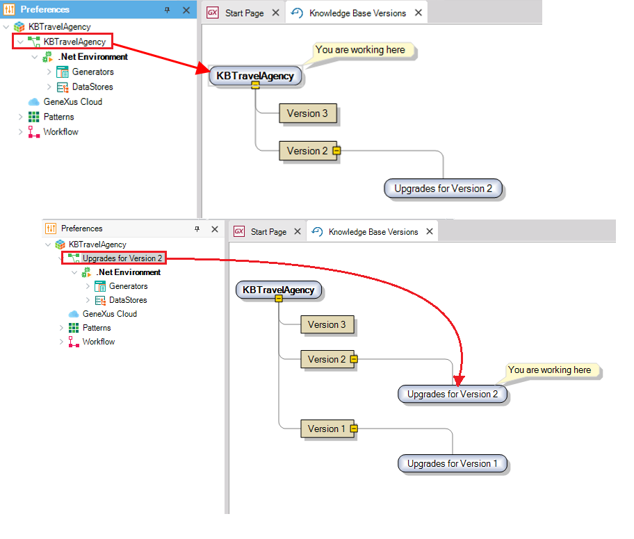

GeneXus provides several ways to easily identify what the active development version is at any given time.
 Fig. Identification of active development versionSee alsoSetting a Development Version as Active
|
| Backlinks |
| Setting a Development Version as Active |